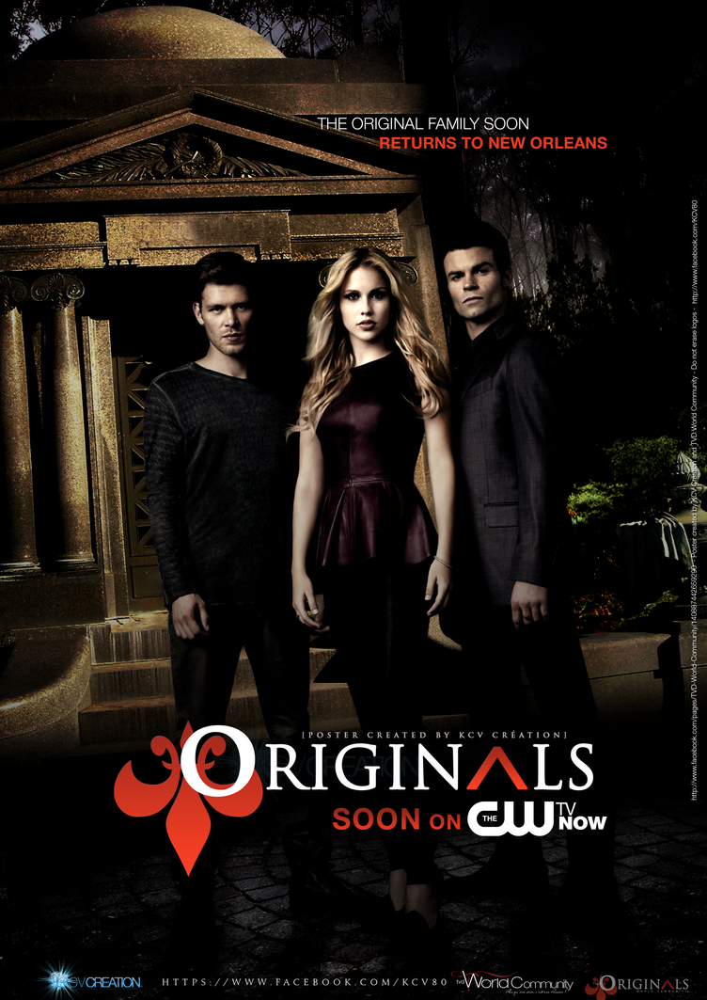
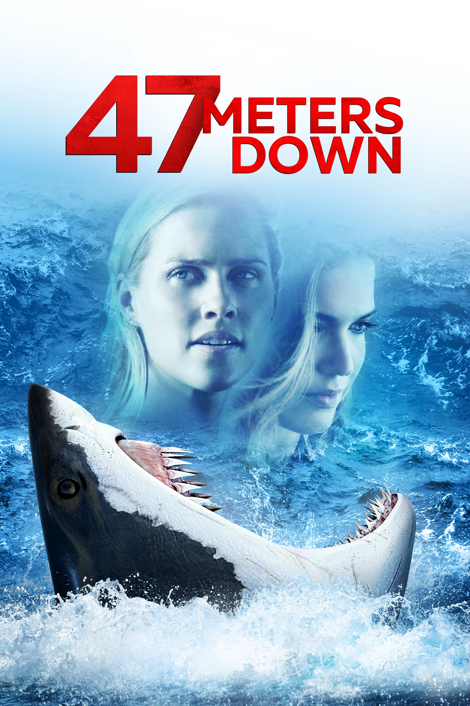
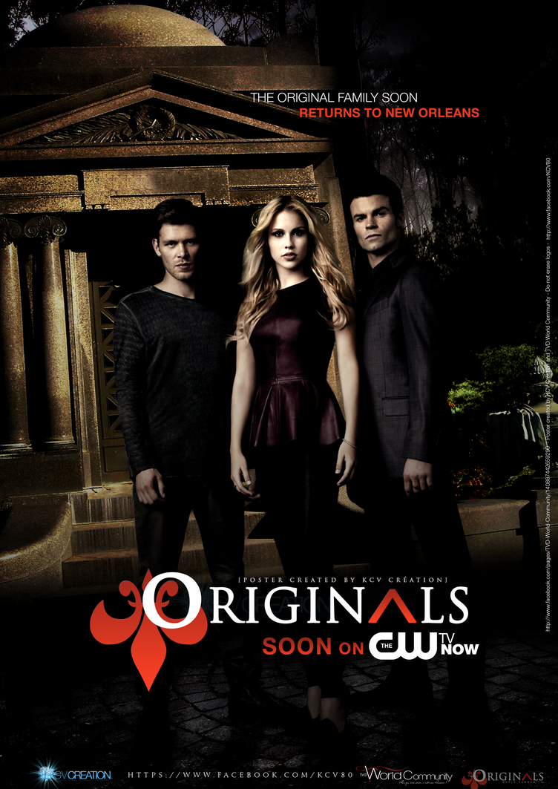
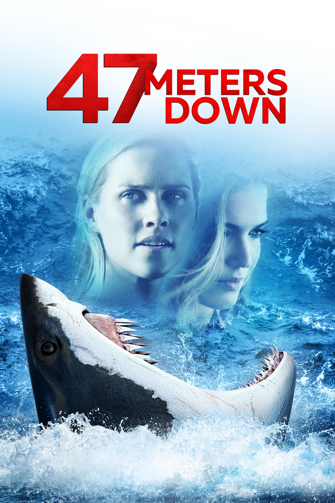

Sobre Mim
Atriz e Modelo
Claire Holt é uma renomada atriz australiana, amplamente reconhecida por seu trabalho em televisão e cinema. Desde jovem, Claire se destacou em atividades artísticas, incluindo dança e teatro, desenvolvendo uma paixão pela interpretação. Após se formar na St. Peters Lutheran College, ela decidiu seguir a carreira de atriz, mudando-se para Sydney para perseguir seus sonhos.Fora das telas, Claire é uma defensora ativa de várias causas sociais, incluindo direitos dos animais e bem-estar infantil. Ela utiliza suas plataformas de mídia social para promover a conscientização e engajar seus seguidores em discussões sobre temas importantes. Além disso, Claire é uma amante de atividades ao ar livre e frequentemente compartilha suas experiências de viagens e aventuras em sua conta no Instagram.Claire Holt recebeu várias indicações e prêmios ao longo de sua carreira, incluindo nomeações ao Teen Choice Awards e ao People's Choice Awards. Seu trabalho em "The Originals" especialmente rendeu-lhe elogios da crítica e dos fãs, consolidando sua posição como uma atriz talentosa e influente.
Carreira
 


